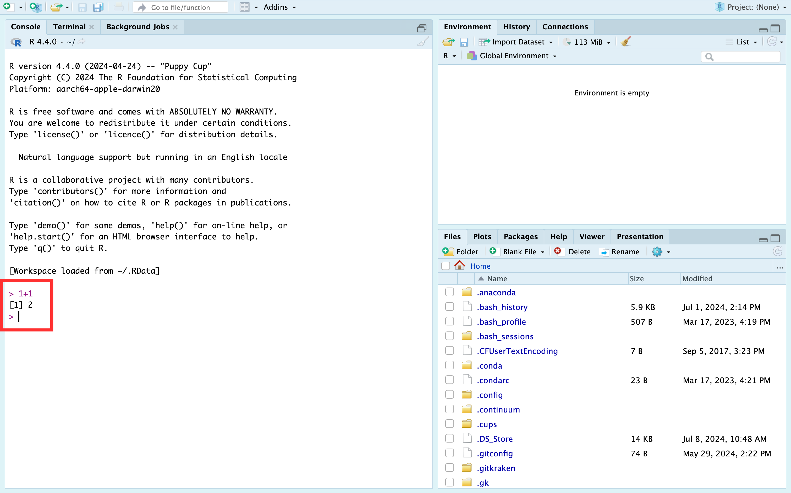
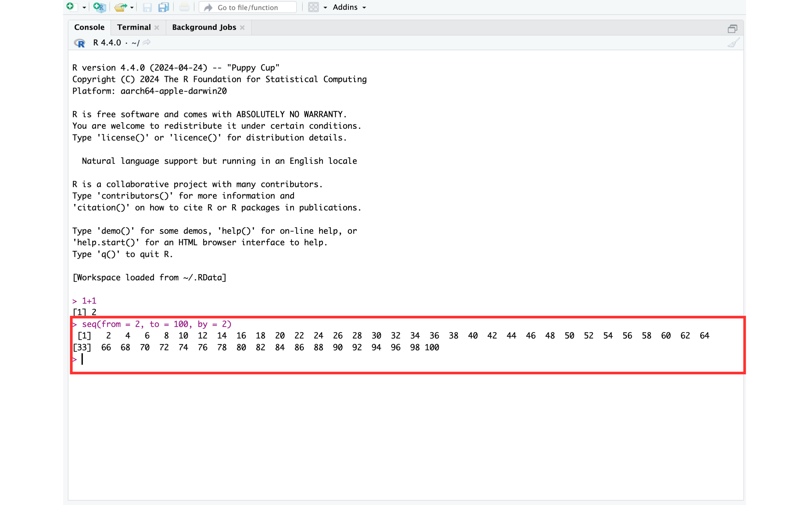

Navigating the RStudio Interface
You now have R and RStudio on your computer and you have some idea of what R and RStudio are. At this point, it is really common for people to open RStudio and get totally overwhelmed. “What am I looking at?” ”What do I click first?” “Where do I even start?” Don’t worry if these, or similar, thoughts have crossed your mind. You are in good company and we will start to clear some of them up in this chapter.
When you first load RStudio you should see a screen that looks very similar to what you see in the picture below. @ref(fig:rstudio) In the current view, you see three panes and each pane has multiple tabs. Don’t beat yourself up if this isn’t immediately obvious. We’ll make it clearer soon.
The console
The first pane we are going to talk about is the Console/Terminal/Jobs pane. @ref(fig:console)

It’s called the Console/Terminal/Jobs pane because it has three tabs you can click on: Console, Terminal, and Jobs. However, we will mostly refer to it as the Console pane and we will mostly ignore the Terminal and Jobs tabs. We aren’t ignoring them because they aren’t useful; rather, we are ignoring them because using them isn’t essential for anything we discuss anytime soon, and we want to keep things as simple as possible.
The console is the most basic way to interact with R. You can type a command to R into the console prompt (the prompt looks like “>”) and R will respond to what you type. For example, below we’ve typed “1 plus 1,” hit enter, and the R console returned the sum of the numbers 1 and 1. @ref(fig:one-plus-one)

The number 1 you see in brackets before the 2 (i.e., [1]) is telling you that this line of results starts with the first result. That fact is obvious here because there is only one result. To make this idea clearer, let’s show you a result with multiple lines.

In the screenshot above we see a couple new things demonstrated. @ref(fig:seq-function)
First, as promised, we have more than one line of results (or output). The first line of results starts with a 1 in brackets (i.e., [1]), which indicates that this line of results starts with the first result. In this case the first result is the number 2. The second line of results starts with a 29 in brackets (i.e., [29]), which indicates that this line of results starts with the twenty-ninth result. In this case the twenty-ninth result is the number 58. If you count the numbers in the first line, there should be 28 – results 1 through 28. we also want to make it clear that “1” and “29” are NOT results themselves. They are just helping us count the number of results per line.
The second new thing here that you may have noticed is our use of a function. Functions are a BIG DEAL in R. So much so that R is called a functional language. You don’t really need to know all the details of what that means; however, you should know that, in general, everything you do in R you will do with a function. By contrast, everything you create in R will be an object. If you wanted to make an analogy between the R language and the English language, functions are verbs – they do things – and objects are nouns – they are things. This may be confusing right now. Don’t worry. It will become clearer soon.
Most functions in R begin with the function name followed by parentheses. For example, seq(), sum(), and mean().
Question: What is the name of the function we used in the example above?
It’s the seq() function – short for sequence. Inside the function, you may notice that there are three pairs of words, equal symbols, and numbers that are separated by commas. They are, from = 2, to = 100, and by = 2. In this case, from, to, and by are all arguments to the seq() function. We don’t know why they are called arguments, but as far as we are concerned, they just are. We will learn more about functions and arguments later, but for now just know that arguments give functions the information they need to give us the result we want.
In this case, the seq() function gives us a sequence of numbers, but we have to give it information about where that sequence should start, where it should end, and how many steps should be in the middle. Here the sequence begins with the value we gave to the from argument (i.e., 2), ends with the value we gave to the to argument (i.e., 100), and increases at each step by the number we gave to the by argument (i.e., 2). So, 2, 4, 6, 8 … 100.
While it’s convenient, let’s also learn some programming terminology:
Arguments: Arguments always go inside the parentheses of a function and give the function the information it needs to give us the result we want.
Pass: In programming lingo, you pass a value to a function argument. For example, in the function call
seq(from = 2, to = 100, by = 2)we could say that we passed a value of 2 to thefromargument, we passed a value of 100 to thetoargument, and we passed a value of 2 to thebyargument.Returns: Instead of saying, “the
seq()function gives us a sequence of numbers…” we could say, “theseq()function returns a sequence of numbers…” In programming lingo, functions return one or more results.
Note
üóíSide Note: The seq() function isn‚Äôt particularly important or noteworthy. We essentially chose it at random to illustrate some key points. However, arguments, passing values, and return values are extremely important concepts and we will return to them many times.
The environment pane
The second pane we are going to talk about is the Environment/History/Connections pane. @ref(fig:environment-pane) However, we will mostly refer to it as the Environment pane and we will mostly ignore the History and Connections tab. We aren’t ignoring them because they aren’t useful; rather, we are ignoring them because using them isn’t essential for anything we will discuss anytime soon, and we want to keep things as simple as possible.

The Environment pane shows you all the objects that R can currently use for data management or analysis. In this picture, @ref(fig:environment-pane) our environment is empty. Let’s create an object and add it to our Environment.
Here we see that we created a new object called x, which now appears in our Global Environment. @ref(fig:environment-pane2) This gives us another great opportunity to discuss some new concepts.
First, we created the x object in the Console by assigning the value 2 to the letter x. We did this by typing “x” followed by a less than symbol (<), a dash symbol (-), and the number 2. R is kind of unique in this way. we have never seen another programming language (although I’m sure they are out there) that uses <- to assign values to variables. By the way, <- is called the assignment operator (or assignment arrow), and ”assign” here means “make x contain 2” or “put 2 inside x.”
In many other languages you would write that as x = 2. But, for whatever reason, in R it is <-. Unfortunately, <- is more awkward to type than =. Fortunately, RStudio gives us a keyboard shortcut to make it easier. To type the assignment operator in RStudio, just hold down Option + - (dash key) on a Mac or Alt + - (dash key) on a PC and RStudio will insert <- complete with spaces on either side of the arrow. This may still seem awkward at first, but you will get used to it.
Note
üóíSide Note: A note about using the letter ‚Äúx‚Äù: By convention, the letter ‚Äúx‚Äù is a widely used variable name. You will see it used a lot in example documents and online. However, there is nothing special about the letter x. We could have just as easily used any other letter (a <- 2), word (variable <- 2), or descriptive name (my_favorite_number <- 2) that is allowed by R.
Second, you can see that our Global Environment now includes the object x, which has a value of 2. In this case, we would say that x is a numeric vector of length 1 (i.e., it has one value stored in it). We will talk more about vectors and vector types soon. For now, just notice that objects that you can manipulate or analyze in R will appear in your Global Environment.
Warning
⚠️Warning: R is a case sensitive language. That means that uppercase x (X) and lowercase x (x) are different things to R. So, if you assign 2 to lower case x (x <- 2). And then later ask R to tell what number you stored in uppercase X, you will get an error (Error: object 'X' not found).
The files pane
Next, let’s talk about the Files/Plots/Packages/Help/Viewer pane (that’s a mouthful). @ref(fig:files-pane)

Again, some of these tabs are more applicable for us than others. For us, the files tab and the help tab will probably be the most useful. You can think of the files tab as a mini Finder window (for Mac) or a mini File Explorer window (for PC). The help tab is also extremely useful once you get acclimated to it.
For example, in the screenshot above @ref(fig:help) we typed the seq into the search bar. The help pane then shows us a page of documentation for the seq() function. The documentation includes a brief description of what the function does, outlines all the arguments the seq() function recognizes, and, if you scroll down, gives examples of using the seq() function. Admittedly, this help documentation can seem a little like reading Greek (assuming you don’t speak Greek) at first. But, you will get more comfortable using it with practice. We hated the help documentation when we were learning R. Now, we use it all the time.
The source pane
There is actually a fourth pane available in RStudio. If you click on the icon shown below you will get the following dropdown box with a list of files you can create. @ref(fig:source1)
If you click any of these options, a new pane will appear. We will arbitrarily pick the first option – R Script.

When we do, a new pane appears. It’s called the source pane. In this case, the source pane contains an untitled R Script. We won’t get into the details now because we don’t want to overwhelm you, but soon you will do the majority of your R programming in the source pane.
RStudio preferences
Finally, We’re going to recommend that you change a few settings in RStudio before we move on. Start by clicking Tools, and then Global Options in RStudio’s menu bar, which probably runs horizontally across the top of your computer’s screen.

In the General tab, we recommend turning off the Restore .Rdata into workspace at startup option. We also recommend setting the Save workspace .Rdata on exit dropdown to Never. Finally, we recommend turning off the Always save history (even when not saving .Rdata) option.

We change our editor theme to Twilight in the Appearance tab. We aren’t necessarily recommending that you change your theme – this is entirely personal preference – we’re just letting you know why our screenshots will look different from here on out.

It’s likely that you still have lots of questions at this point. That’s totally natural. However, we hope you now feel like you have some idea of what you are looking at when you open RStudio. Most of you will naturally get more comfortable with RStudio as we move through the book. For those of you who want more resources now, here are some suggestions.